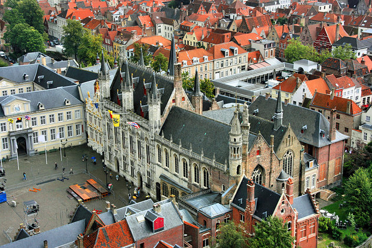

AUSTRIA
BELGIUM
BULGARIA
CROATIA
CYPRUS
CZECH REPUBLIC
DENMARK
ESTONIA
FINLAND
FRANCE
GERMANY
GREECE
HUNGARY
ITALY
LATVIA
LITHUANIA
MALTA
NETHERLANDS
POLAND
PORTUGAL
ROMANIA
SLOVAKIA
SLOVENIA
SPAIN
SWEDEN
UNITED KINGDOM
- FLAGS OF EUROPE


Belgium a country in Europe
| FACTS ON BELGIUM | |
|---|---|
| Capital: | Brussels |
| Political system: | Federal Parliamentary Constitutional Monarchy |
| Language: | Dutch, French and German |
| Currency: | Euro |
| FACTS ON BRUGES: BELFRY & HALLE |
|---|
| Dating from the medieval era, this impressive building once functioned as the main town market hall and has been wonderfully preserved allowing visitors a real taste of the architectural might of the Middle Ages. |
| For most travelers to Belgium, a hike up the 366 winding and narrow steps of the belfry is a must-do activity while in Bruges. Once at the top, the views of church spires and steeple-roofs provide one of the country's most well-known panoramas. |
| FACTS ON CATHEDRAL OF SAINT BAVO, GHENT |
|---|
| Although the soaring building, with its harmonious stained glass windows, is a highlight in itself, most people come here to see the famous artwork that graces the interior; specifically the Flemish masterpiece known as The Altar of Ghent. |
| Once you've viewed the painting though, don't miss the mammoth crypt under the cathedral, which contains important tombs and some beautiful wall paintings. |
| FACTS ON THE BATTLE OF FLANDERS |
|---|
| Not only important historically, the battlefields are a major pilgrimage site. The preserved trenches run for kilometers around the town of Ypres, while this area is also scattered with vast cemeteries for the thousands of soldiers who died here. |
| The Tyne Cot Cemetery (British) and Langemark's German War Cemetery are both solemn reminders of the brutal fighting that took place here during the Great War. |
| FACTS ON GHENT'S GRAVENSTEEN |
|---|
| Today, Gravensteen is one of Europe's best surviving examples of a moated fortress and has been incredibly well-preserved. Its strong and impressively thick and high walls soar up from the waters of the river Lieve right in the middle of the old town of Ghent, rising above the rooftops of the surrounding streets. |
| OInside, the vast arched halls and chambers contain exhibits of medieval life, but it's the castle's architecture itself that is the real star of the show. Climb up the staircase to the roof for panoramic views across town. |

If you're only going to visit one church in Bruges make it this one.
| FACTS ON BASILICA OF THE HOLY BLOOD, BRUGES |
|---|
| The Basilica of the Holy Blood is not only impressive for its blending of Romanesque and late Gothic architecture but also for the sacred relic kept inside. The upper chapel is home to the famous vial for which the church takes its name; said to contain a drop of Jesus Christ's blood that was brought back to Belgium after the Second Crusade. |
| The interior of the church is a dazzling riot of gild work that was completed in the 16th century and provides ample reason for a visit even if you're not interested in holy relics. |
| FACTS ON MEUSE VALLEY |
|---|
| This is the perfect opportunity to take a trip along the river watching the beautiful scenery unfurl; dense forests are interspersed with cutesy towns backed by limestone cliffs. |
| In particular, the towns of Namur and Dinant act as a gateway to this region, which has a host of hiking and cycling trails for travelers who want to add some activities into their holiday. Both towns boast craggy cliff top citadels as well as a clutch of other historic sights, but the real highlight in this area is the scenery itself. |
Right in the core of Antwerp, sits the town's wonderful Grand Place (also known
as the Grote Markt), which contains some of Belgium's finest examples of guild house architecture
with their typical steeple-roofed shape.
as the Grote Markt), which contains some of Belgium's finest examples of guild house architecture
with their typical steeple-roofed shape.
| FACTS ON GRAND PLACE, ANTWERP |
|---|
| The Town Hall here is a well-preserved example of 16th-century construction, and the interior is worth viewing for its collection of paintings that show Antwerp's history. The guild houses that still rim the plaza are the major reason to visit the Grote Markt though. |
| TAmong the best facades are the Coopers' House and Grocers' House, but all of them are well-preserved examples of this Belgian-style of architecture. |
| FACTS ON MONS OLD TOWN |
|---|
| At the center is the Grand Place, a main square graced by a variety of typically ornate buildings that span a 400-year period, dating from between the 15th and 18th centuries, yet still retain a sense of symmetry. In particular, the Toison d'Or House (1615) and the Chapel of St. George (1604) are architectural highpoints. |
| Away from the Grand Place, the old town hides many more sightseeing opportunities. The UNESCO-listed bell tower on the hill above town and the Church of Sainte-Waudru with its interior crammed full of artistic and religious relics are two of the most important attractions. |
St. Peter's Church sits in the center of Leuven on the town's main square or Grote Markt.
| FACTS ON ST. PETER'S CHURCH, LEUVEN |
|---|
| For architecture and history fans, this is one of Belgium's best preserved examples of the Brabant Gothic style with its pointed arch windows and sheaf pillars. Inside, art-lovers will find an extra treat. The choir of the church, as well as the ambulatory, are home to a museum dedicated to religious art where some of the finest Flemish paintings illustrating biblical scenes are hung. |
| In particular, the Baroque carved pulpit and Dirk Bouts' painting of the Last Supper are worth a visit. |
| FACTS ON MECHELEN OLD TOWN |
|---|
| Its monuments may not be as famous as those in Bruges but Mechelen's old town area is a great place to capture a sense of medieval Belgium with plenty of gabled architecture and fine old buildings still in situ. |
| The central Grote Markt is bordered by some exceptionally fine buildings including the Town Hall and Lakenhall, while the impressive Sint-Rombouts Cathedral with its tall clock tower rises up just behind. |